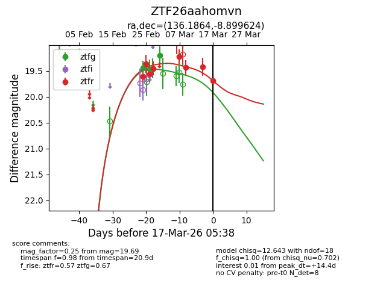
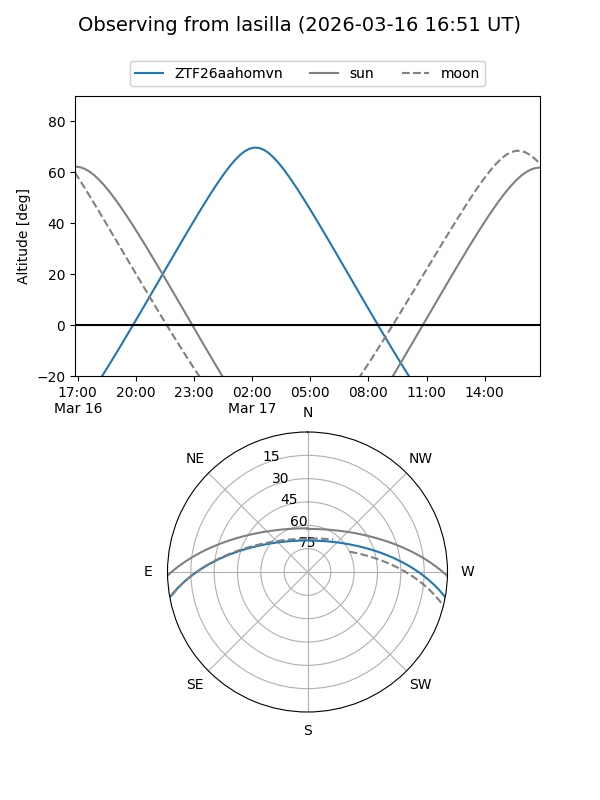
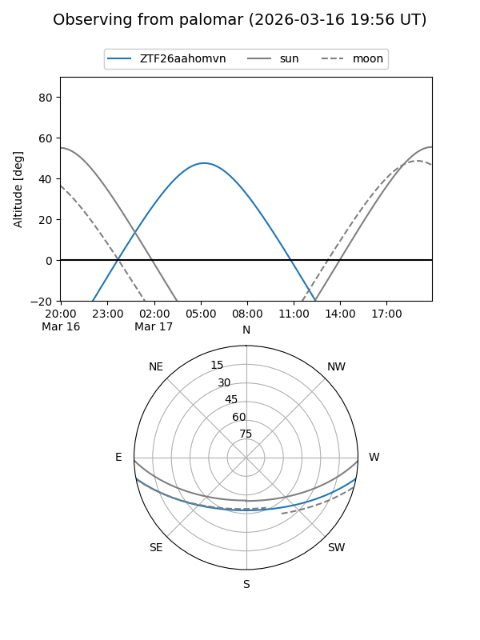
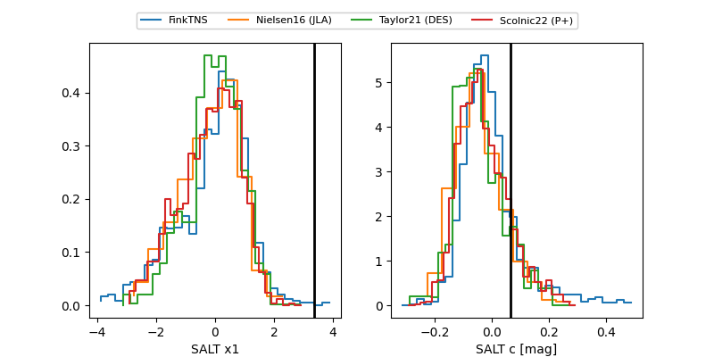

ZTF26aahomvn
Target ZTF26aahomvn at 2026-03-17 05:40
Aliases and brokers:
FINK: link
Lasair: link
ALeRCE: link
alt names
ZTF26aahomvn (ztf,fink_ztf)
Coordinates:
equatorial (ra, dec) = 136.1864,-8.89962
equatorial (HMS+DMS) = 09:04:44.74,-08:53:58.65
galactic (l, b) = (237.9468,+24.36477)
Flags:
Photometry:
last ztfg=19.20, ztfr=19.69
4 ztfg, 8 ztfr detections
Lightcurve

Visibility


Additional plots
